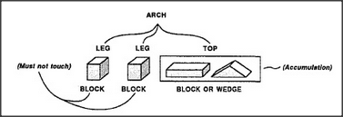

When should you accumulate, and when should you make uniframes? The choice depends upon your purposes. Sometimes it is useful to regard things as similar because they have similar forms, but sometimes it makes more sense to group together things with similar uses. At one moment you may wish to emphasize a similarity; at the next moment, you may want to emphasize a distinction. Often, we have to use both uniframes and accumulations in combination. In Block-Arch, for example, we found that there could be two different kinds of arch tops — the block and the wedge. Accordingly, when we used the phrase block or wedge, we actually inserted a subaccumulation into our uniframe.
Accumulations rarely seem quite satisfactory because we feel ideas should have more unity. We wouldn't have a word for chair or arch or currency if they meant nothing more than lists of unrelated things. If each did not involve some unifying thought, we'd never think to make those lists in the first place! Why is it so hard to describe their essences? In the next few sections we'll discover a number of reasons for this. Here is one of them:
Many good ideas are really two ideas in one — which form a bridge between two realms of thought or different points of view.
Whenever we build a bridge between structure and function, one end of that bridge may represent a goal or use, while the other end describes what we might use to gain those ends. But it is rare for those structures to correspond neatly to those functions. The problem is that we usually find many different ways to achieve any goal. This means that we'll find an accumulation on the structural side of the bridge. For example, if you want to reach something high up, you can stand on a chair, reach with a stick, or ask someone taller to get it for you. Similarly, an accumulation of functions or goals can be found for any structure. My colleague Oliver Selfridge once wrote an entire book entitled Things to Do with a Stick.
Our different worlds of ends and means don't usually match up very well. So when we find a useful, compact uniframe in one such world, it often corresponds to an accumulation in our other worlds.
We encountered this problem earlier. When we classified birds as animals while classifying airplanes as machines, we thereby forced disunity upon the class of things that fly. Later, when we come to theories about metaphors, we'll see that such problems are almost inevitable because we know only a very few — and, therefore, very precious — schemes whose unifying powers cross many realms.